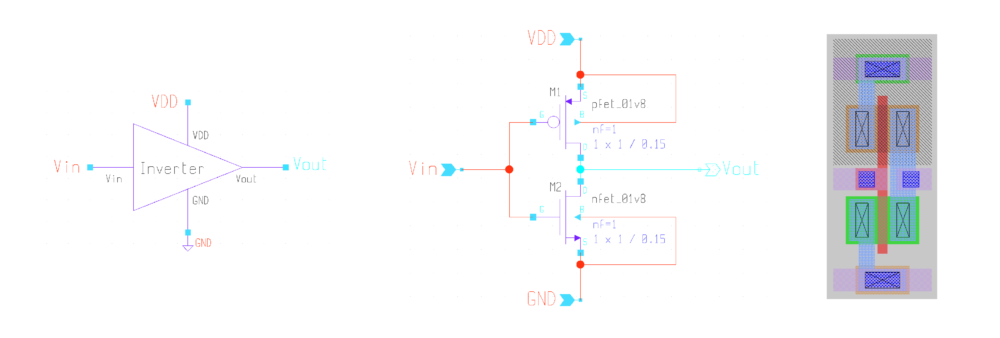
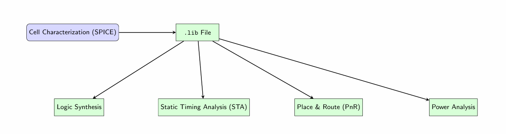
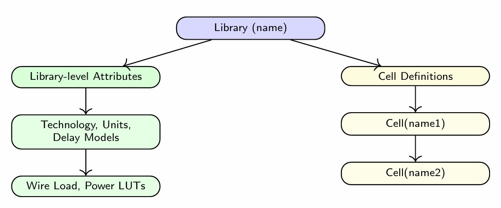
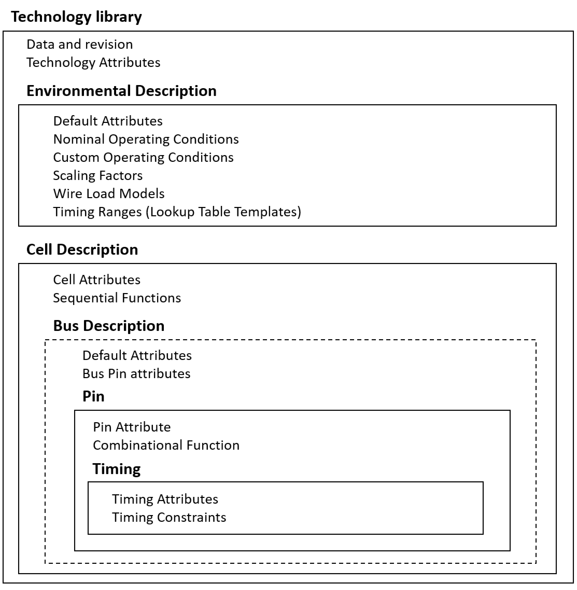

Liberty File (.lib)¶
Introduction¶
A Liberty (.lib) file is a standard cell library description used by synthesis, timing analysis, and physical design tools. It contains timing, power, area, and functional information for each cell in a technology library.
Liberty files are developed by the foundry or library vendor and are one of the primary inputs to digital implementation flows.

".lib is the DNA of your standard cells."
Why Liberty Files Are Important¶
Liberty files provide:
- Cell functionality
- Timing information
- Power information
- Area information
- Pin characteristics
- Operating conditions
- Constraint definitions
Tools such as Fusion Compiler, PrimeTime, Design Compiler, OpenROAD, and Yosys use Liberty files during implementation and signoff.
Liberty File in ASIC Flow¶
The .lib file is the primary source of timing and power data for multiple EDA stages; without it, synthesis, STA, PnR, and power analysis cannot be accurate.

Basic Structure¶
A Liberty file typically contains:
- A library description defines the properties, technology parameters, and contents of a standard cell library.
- General Syntax:
- First statement — library(name): names the library.
- Followed by library-level attributes: technology type, units, delay models, routing layers, etc.
- Cell descriptions: Each cell has its own definition block.
- Statements define:
- Units (time, voltage, current)
- Delay models
- Wire load models
- Power lookup tables
- Cell-level properties and scaling options

library (name) {
technology (name);
delay_model : generic_cmos | table_lookup | cmos2 | ... ;
bus_naming_style : string;
routing_layers(string);
time_unit : unit;
voltage_unit : unit;
current_unit : unit;
capacitive_load_unit(value,unit);
leakage_power_unit : unit;
operating_conditions (name) { ... }
timing_range (name) { ... }
wire_load (name) { ... }
wire_load_selection() { ... }
power_lut_template (name) { ... }
cell (name1) { ... }
cell (name2) { ... }
type (name) { ... }
input_voltage (name) { ... }
output_voltage (name) { ... }
}

Key Library Attributes¶
Technology Information¶
- Time Unit
- Voltage Unit
- Current Unit
- Capacitance Unit
- Resistance Unit
Operating Conditions¶
Example:
Parameters:
- Process
- Voltage
- Temperature
Cell Definition¶
Example:
cell(AND2X1) {
area : 1.25;
pin(A) {
direction : input;
}
pin(B) {
direction : input;
}
pin(Y) {
direction : output;
}
}
Timing Arcs¶
Timing arcs define delay relationships between input and output pins.
Example:
Common timing arc types:
- Combinational
- Rising Edge
- Falling Edge
- Setup
- Hold
- Recovery
- Removal
Delay Modeling¶
Delay depends on:
- Input Transition
- Output Load Capacitance
- Process Corner
- Voltage
- Temperature
Liberty files typically use lookup tables to model delays accurately.
Power Modeling¶
Power data includes:
- Internal Power
- Switching Power
- Leakage Power
Example:
Important Sections in a Liberty File¶
Library¶
Cell¶
Pin¶
Timing¶
Internal Power¶
Usage in Design Flow¶
| Stage | Usage |
|---|---|
| Synthesis | Cell Mapping |
| Placement | Timing Estimation |
| CTS | Clock Optimization |
| Routing | Timing Updates |
| STA | Signoff Analysis |
| Power Analysis | Dynamic and Leakage Power |
Summary¶
The Liberty file is one of the most important inputs in ASIC implementation. It describes the functionality, timing, power, area, and constraints of standard cells and enables accurate synthesis, physical design, timing analysis, and power analysis throughout the design flow.